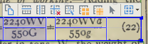

Table columns and rows can be adjusted before recognition.
ABBYY FineReader has a small set of tools for adjusting tables to improve
recognition accuracy.
-
Click on the table to make the table tools menu bar appear.

-
Use the pointer icon to grab and move row and column dividers with your
mouse.
-
Use the second icon to create a new row by clicking with the mouse where you
want to position it.
-
Use the third icon to create a new column.
-
The yellow icons split and merge table cells.